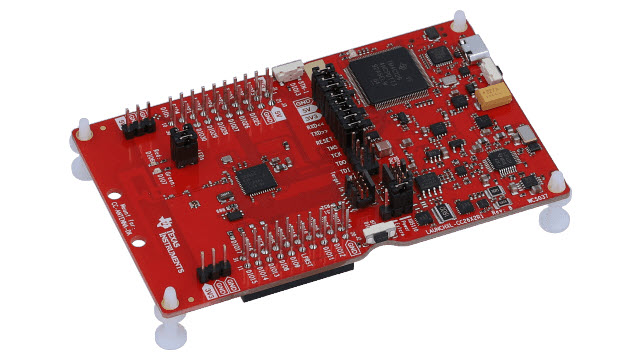
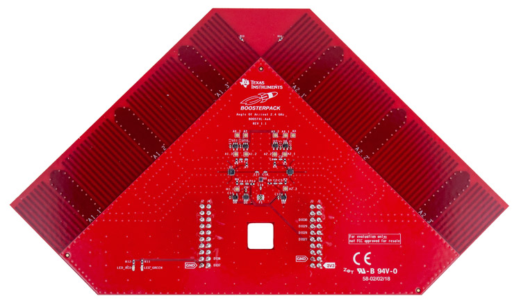
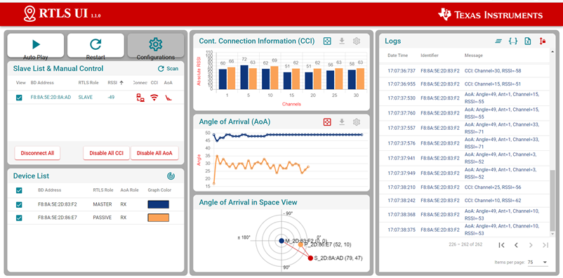
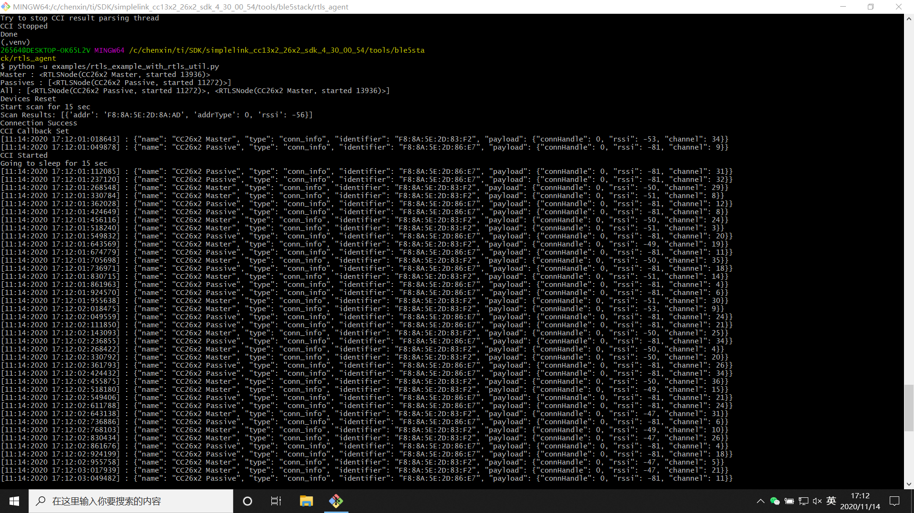
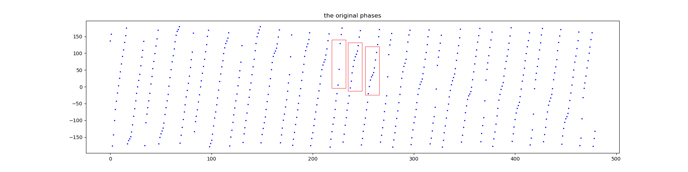
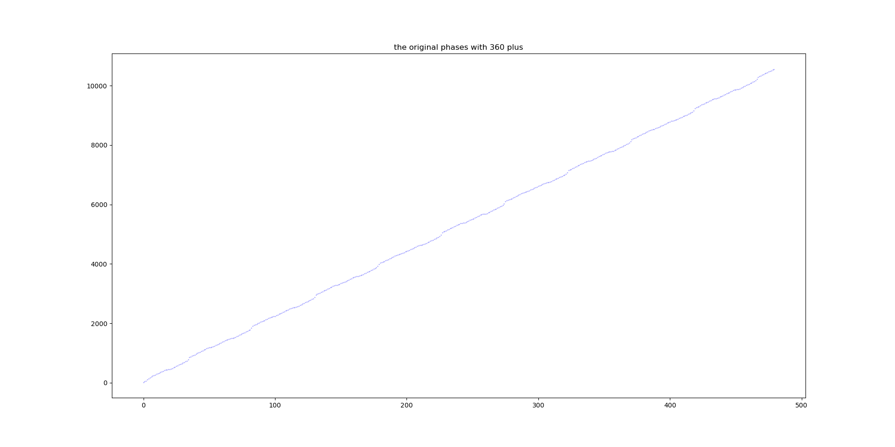
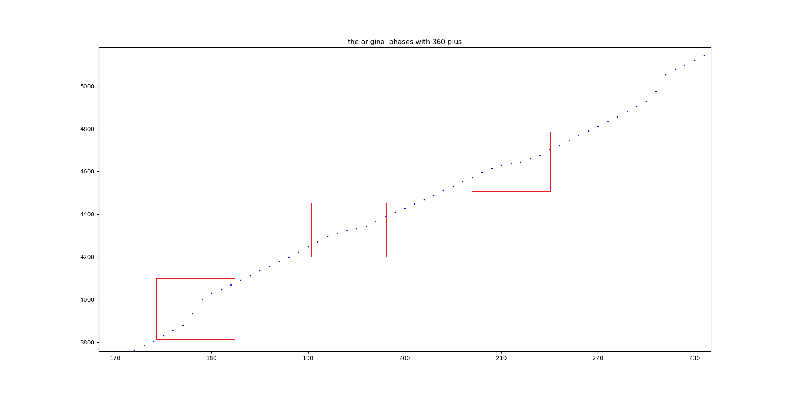

Implementation and Challenges of Localization Algorithms
Device Overview
This section introduces the hardware and software components of Texas Instruments’ latest Angle-of-Arrival (AoA) localization module.
The hardware of the AoA localization module consists of the SimpleLink CC26X2R LaunchPad development board and the BOOSTXL-AoA Bluetooth antenna array module. The former is a rectangular programmable development board; the latter is a triangular printed circuit board equipped with three antennas on each side, which can be soldered onto the development board to receive Bluetooth signals and compute the angle of arrival (AoA). A complete Bluetooth AoA localization setup requires at least three SimpleLink CC26X2R LaunchPad devices and at least two BOOSTXL-AoA modules.


The software component comprises control code running on a host PC and firmware flashed onto the LaunchPad development boards. There are three distinct firmware images—each configured to operate as either a Master, a Passive, or a Slave node in the Bluetooth communication stack. Each localization scenario requires exactly one Master node, one Slave node, and at least one Passive node. The Slave node is physically mounted on the object to be localized (its position is unknown), whereas the Master and Passive nodes are fixed at known locations and connected via USB to the same host PC. The Master sends control commands to the Slave, instructing it to broadcast localization packets containing Constant Tone Extension (CTE) information. These packets are received by both the Master and Passive nodes, which independently compute AoA estimates. Using two or more such AoA measurements, the position of the Slave can be triangulated. Only the Master and Passive nodes require the BOOSTXL-AoA module for AoA computation; the Slave node needs only to transmit and receive Bluetooth signals and therefore operates using its onboard single antenna—no BOOSTXL-AoA module is required.
Configuration and Setup of the Experimental Environment
(1) SDK Installation: Download and install the SimpleLink CC13X2–CC26X2 SDK from the official TI website. The installation directory contains all necessary software components—including the host-side control code and the three firmware images (Master, Passive, Slave) to be flashed onto the LaunchPad boards.
The host-side control code resides in the following path:
<SimpleLink CC13X2 / CC26X2 SDK> → tools → ble5stack → rtls_agent.
It requires a Python 3 environment. Before execution, follow the instructions in the README file located in the rtls_agent folder: run
pip.exe install -r requirements.txt
to install required Python packages, then execute
package.bat -c -b -u -i
to install the rtls_agent library dependencies. Note that package.bat hardcodes the Python executable path; prior to use, edit the first eight lines of this script to set the PYTHON3 and PIP3 variables to the correct paths of python.exe and pip.exe, respectively.
(2) Firmware Flashing: The firmware images reside in:
<SimpleLink CC13X2 / CC26X2 SDK> → examples → rtos → CC26X2R1_LAUNCHXL → ble5stack,
within subfolders named rtls_master, rtls_slave, and rtls_passive, corresponding to the Master, Slave, and Passive roles, respectively. Here, “rtls” stands for Real-Time Localization System. Each firmware image is a Code Composer Studio (CCS) project. To flash them, install CCS, open the respective .project files, build the projects, and deploy the binaries to the target LaunchPad boards using CCS’s debug interface. Alternatively, if CCS deployment fails, precompiled binary files may be flashed directly into the device’s flash memory using other compatible tools.
(3) Hardware Assembly: Figures 4.1 and 4.2 illustrate the standard development board and the Bluetooth antenna array. Each development board is equipped with a built-in antenna for general data transmission/reception. However, AoA computation requires an antenna array to capture phase differences across multiple spatially separated elements. Therefore, the BOOSTXL-AoA module must be physically connected to the CC26X2R1 board to utilize its integrated antenna array. During operation, BOOSTXL-AoA modules may be installed on both Master and Passive boards to enable AoA computation. Since external antennas are used after installation, the default CC26X2R1 board must be modified accordingly. Detailed modification instructions are available at:
https://dev.ti.com/tirex/explore/node?node=AHYhhuDNTaRXzkOlahOlvA__pTTHBmu__LATEST
Data Acquisition and Localization Principle
In a localization experiment, Master and Passive boards are deployed within the target environment, with their antenna arrays horizontally aligned at fixed, precisely measured positions—including the coordinates of each array’s geometric center and its physical orientation. Due to the inherent limitation of AoA estimation using a linear antenna array, only a 180° angular field of view is supported; the algorithm cannot distinguish whether the target lies to the left or right of the array axis. For optimal accuracy, antenna arrays should be placed near the boundaries of the operational area. Both Master and Passive nodes connect to the same host PC via USB to relay computed AoA values and other telemetry.
Once the experimental setup is complete, the Slave node’s location can be determined. The Slave merely broadcasts Bluetooth signals omnidirectionally and thus does not require an antenna array. Its behavior is remotely controlled over Bluetooth by the Master node; consequently, it need not be connected to the host PC. A portable power source (e.g., a power bank) supplying power via the Slave’s USB port suffices.
After deploying the hardware, connect the Master and Passive boards to the host PC and launch the control software. A graphical user interface (GUI) tool is provided under:
<SimpleLink CC13X2 / CC26X2 SDK> → tools → ble5stack → rtls_agent → rtls_ui.
Double-click rtls_ui.exe; upon completion of initialization, TI’s visualization dashboard will automatically open in the default web browser. Once the application detects connected SimpleLink development boards via USB serial ports, select and connect the Master and Passive devices as prompted, then click Auto Play to initiate the full localization workflow. AoA results are displayed in real time. Should connection loss or missing readings occur, click Restart to reinitialize the devices, then resume with Auto Play. Click Configurations to adjust runtime parameters. Of particular importance is connect_interval_mSec, whose default value is 100. While this yields high localization update rates, it compromises connection stability. Setting connect_interval_mSec = 300 reduces update frequency but significantly improves robustness—sufficient for sustained long-term tracking.

Although the GUI offers ease of use and comprehensive logging, its configurability and extensibility are limited. As an alternative, TI provides a Python-based API via the rtls_util library. Example scripts are located in:
<SimpleLink CC13X2 / CC26X2 SDK> → tools → ble5stack → rtls_agent → examples.
Three Python files demonstrate various usage patterns:
- rtls_example_with_rtls_util.py: Minimal working example for basic AoA localization.
- rtls_aoa_multi_conn_example.py: Demonstrates simultaneous multi-target localization by connecting to multiple Slave nodes.
- rtls_aoa_iq_with_rtls_util_export_into_csv.py: Generates a folder named rtls_example_with_rtls_util_log, storing both .log and .csv files. The CSV file records I/Q samples for each measurement point, enabling post-processing analysis.
All scripts are executable out-of-the-box, but they hardcode the COM port names of the Master and Passive devices instead of dynamically enumerating USB serial interfaces. Users must manually identify the correct COM ports for these devices in Windows Device Manager and update the Python source accordingly before execution.

The underlying logic and execution sequence of the Python scripts and the GUI tool are identical:
1) Acquire serial port identifiers for the Master and Passive devices—either by scanning USB interfaces or via hardcoded strings—and register them using rtlsUtil.set_devices().
2) Initialize all devices via rtlsUtil.reset_devices().
3) Execute rtlsUtil.scan() using the Master node to discover nearby Slave devices and retrieve their Bluetooth addresses and advertising data.
4) Based on the scan results, establish BLE connections to selected Slave devices using rtlsUtil.ble_connect(). The parameter connect_interval_mSec controls connection interval; as noted earlier, 100 maximizes responsiveness but risks instability, whereas 300 trades lower update rate for improved reliability.
5) Configure AoA-specific parameters—including sampling rate, antenna switching frequency, and switching pattern—using rtlsUtil.aoa_set_params(), then invoke rtlsUtil.aoa_start() to begin localization. Thereafter, the Master continuously transmits control messages to the Slave, commanding it to broadcast CTE-containing Bluetooth packets. Each Master and Passive node computes one AoA estimate per received packet, streaming results back to the host PC for real-time localization.
Upon acquiring real-time AoA measurements from all nodes, triangulation is applied using the pre-measured positions and orientations of the Master and Passive nodes to compute the Slave’s Cartesian coordinates. This system also supports multi-target localization: the Master can maintain concurrent BLE connections to multiple Slaves, each identified uniquely by its MAC address. Both Master and Passive nodes can simultaneously receive and process packets from all connected Slaves, computing independent AoA estimates for each—enabling parallel localization of all targets.
4. Data Processing
In conventional AoA systems employing antenna arrays, all antennas receive signals concurrently. At any given instant, the phase difference between two antennas multiplied by the signal wavelength yields the path-length difference from the source to those antennas; applying trigonometry then yields the angle of arrival. In contrast, TI’s SimpleLink platform implements sequential antenna polling: antennas are activated one at a time in a fixed cyclic order (e.g., 1→2→3→1→2→3). When antenna 2 receives a signal, the phase that antenna 1 would have measured at that same instant is inferred from previously acquired samples collected by antenna 1. The procedure is as follows:
1) Compute the average phase difference between consecutive samples acquired by the same antenna during uninterrupted reception (i.e., excluding intervals where antenna switching occurs).
2) If each antenna collects 16 samples, compute the phase difference between sample i+16 and sample i across the entire sequence. Since samples spaced 16 apart originate from different antennas, at least one antenna switch necessarily occurs between them.
3) Estimate the expected phase at sample i+16 for the same antenna as sample i by adding 16 × avg_phase_diff to the phase at sample i. Comparing this estimate against the actual phase at sample i+16 yields an effective inter-antenna phase difference at synchronized time instants.
4) Subtract 16 × avg_phase_diff from the raw phase difference (phase[i+16] − phase[i]) to obtain the true instantaneous phase offset between two antennas.
5) Because antennas are polled in the repeating sequence 1→2→3→1→2→3, the computed phase differences for pairs (1,2) and (2,3) should be similar, whereas the (3,1) difference should be approximately the negative of the others and twice their magnitude. Thus, apply a correction factor of −0.5 to all (3,1)-associated differences before averaging. Pseudocode:
phase_diff = [phase[i+1]-phase[i] for i in range(length - 1) if i%16 != 0 ]
avg_phase_diff = average(phase_diff)
antenna_diff = [phase[i+16]-phase[i]-avg_phase_diff*16 for i in range(length - 16) ]
antenna_diff_fixed = [ i if floor(i/16)%3 != 2 else -0.5*i for i in antenna_diff ]
avg_diff = average(antenna_diff_fixed)
avg_distance = avg_diff / 2 / pi * wavelength
angle = arcsin(avg_distance / antenna_distance)
Note: Phase values wrap within the range [−180°, +180°]; crossing ±180° causes discontinuous jumps rather than monotonic progression. The figure below shows the phase evolution across 512 samples from a single Bluetooth packet. Red boxes highlight antenna-switching transitions (3→1, 1→2, 2→3) and associated changes in slope.

As shown, phase increases monotonically across samples, exhibiting two decelerations and one acceleration per 48-sample cycle—corresponding to antenna switches. To visualize trends more clearly, phase unwrapping (adding/subtracting multiples of 360°) eliminates discontinuities, yielding the smoothed curve below.


Direct subtraction of 16 × avg_phase_diff without phase unwrapping may introduce bias. However, since antenna spacing is less than half a wavelength, inter-antenna phase differences remain bounded within ±180°; values exceeding this range can be corrected by adding or subtracting 360°.
The above algorithm is embedded within the firmware flashed onto Master and Passive nodes by TI. Importantly, TI’s evaluation kit supports both exporting raw I/Q samples to the host PC via USB and performing on-chip AoA computation autonomously.